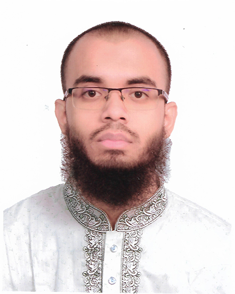

|  |
My name is Rahat Kibria. I was born in Chittagong (Chattagram), Bangladesh. I spent most of my childhood in Chittagong. I spent my school and college life at Bangladesh Nou-Bahini School and College Chittagong. After that I went to Chittagong College to study BSc in Physics. But after a year, I left Chittagong College and went to International Islamic University Chittagong (IIUC) to study BSc in CSE. |
|
My varsity project was to make an e-commerce website. This led me to gain my interest in Web Development. Now, I am trying my best to ballance both Deen (Religiosity) and Dunya (Worldly affairs). I regularly read books, listen to lectures, learn english and arabic, and do coding for both Deen and Dunya. |
|